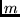

Next: 6 Parameter specification
Up: SAM (Sequence Alignment and
Previous: Bibliography
Contents
5 File types
SAM produces a variety of files. This section summarizes both the
extensions SAM uses and the extensions we conventionally use when
naming output that goes to standard output.
The following file extensions are automatically used:
- .a2m
- A SAM alignment file, as created by align2model or
hmmscore. A FASTA-compatible format.
See Section 10.1.
- .apr
- A SAM alignment probabilities file, as created by pathprobs. An RDB-compatible format. See Section 10.7.
- .cst
- A SAM constraints file containing the definition of
sequence position constraints.
See Section 9.6.
- .data
- A gnuplot data file generated by makehist.
See Section 10.10.
- .dist
- A scoring file listing sequence identifiers, lengths, and
scores, produced by hmmscore. See Section 10.2.
- .dist-rdb
- A scoring file in RDB format including sequence
identifiers, lengths, scores, and information about scoring method
produced by hmmscore. See Section 10.2.
- .freq
- A frequency model generated by buildmodel when
many_files is set. This is
a model that reports the frequency of each letter in each state when
the training set is evaluated according to the model. See Section 9.3.
- .hmmer
- An HMMER-format model produced by sam2hmmer.
See Section 10.9.5.
- .kids
- A Kestrel sequence id file. The file is an ordered
list of identifiers for sequences in a .kseq or .krseq file.
See Section 10.11.9.
- .kseqs
- A Kestrel sequence database, containing an encoding
of the sequences optimized for Kestrel hmmscore.
See Section 10.11.9.
- .kseqs
- A Kestrel reverse null model scoring sequence database.
This contains each sequence in the original database, plus a reverse
of the sequence.
See Section 10.11.9.
- .match-rdb
- An RDB file created by grabdp, listing the posterior
match probabilities of each amino acid type at each node, plus the prior
probabilities of each amino acid type. Used for diagnostic purposes.
See Section 10.4.
- .mod
- A model file created by a buildmodel, addfims, or modelfromalign. When many_files is not set
(the default), buildmodel places the run statistics, parameter
settings, and the
frequency model into this file as well. See Section 9.3.
- .f.mod
- A subfamily model for family number `f'. See Section 9.4.
- .a.mrrr.mod
- If print_all_models is set, model number 
during re-estimate cycle 'rrr' will be placed in the file.
- .s.rrr.mod
- If print_surg_models is set, the winning
model is printed after each surgery iteration, where `rrr' is the
re-estimation index.
- .mult
- One of two multiple domain alignment output files created
by hmmscore. This will contain
all alignments to a motif that were found. See Section 10.2.4.
- .mlib
- A model library file created by hmmscore model
calibration. Each entry includes a single- or multi-track model
specification and various scoring parameters. See Section 10.2.9.
- .mstat
- The other multiple domain output file. This file contains
the sequence identifier and scores for the data in the corresponding
.mult file. See Section 10.2.4.
- .pa2m
- A SAM alignment file that alternates sequences and
posterior probability annotations in sequence format, as created by
pathprobs.
See Section 10.7.
- .pdoc
- Created by grabdp, this file contains the posterior
decoding of the dynamic programming for match states and transitions
into match states. The files tend to be rather large. See Section 10.4.
- .plt
- A gnuplot command file created by makehist. See Section 10.10.
- .ptrack
- Created by predict_track, this file contains
secondary structure (or other second alphabet) predictions for a given
sequence based on a primary sequence model, and databases of primary
and secondary structure for a group of sequences.
See Section 10.8.
- .samrc
- A file of default parameters either in a home directory
or the current directory. See Section 6.
- .sel
- Sequences that passed the selection criteria used in hmmscore. See Section 10.2.
- .seq
- A file of sequences, as for example created by sampleseqs.
- .stat
- The statistics of a buildmodel run when many_files is set, including re-estimation scores and initial
parameters. See Section 9.3.
- .weightoutput
- A list of sequence weights from the internal
weighting option of buildmodel. Present when print_all_weights and internal weighting are both enabled.
See Section 9.4.4.
The following file extensions are conventionally used in this manual.
- .colors
- A color file for the makelogo program, usually
located in the same directory as the Dirichlet priors.
See Section 10.9.3.
- .log
- Standard error output from running target99 can be
redirected to this file. See Section 4.
- .ncomp
- A Dirichlet mixture prior library file, where n is the
number of components to the mixture, as in null.1comp or mall-opt.9comp. Information on specific mixtures can be
found at http://www.cse.ucsc.edu/research/compbio/dirichlets/index.html.
See Section 8.1.
- .plib
- A Dirichlet mixture prior library file (old naming
convention).
The same extension is used both for match state regularizers and
HSSP-based transition regularizers.
See Section 8.1.
- .pretty
- The output (stdout) from prettyalign.
See Section 10.1.
- .regularizer
- A transition regularizer, generally used in
conjunction with a Dirichlet mixture regularizer for the match
states. See Section 8.1.
- .weights
- A file of sequence weights. See Section 9.4.
In most cases, SAM can read compressed (.gz or .Z) files, specified
either as their complete name or as their root name without the
compression suffix. If the root name is given and both a compressed
and an uncompressed file exist, the uncompressed file is read. If
both a .gz and a .Z file is present, the .gz file is used. Reading
compressed files requires that the GNU decompression program gunzip and the Unix decompression program uncompress be in the
user's path.
Next: 6 Parameter specification
Up: SAM (Sequence Alignment and
Previous: Bibliography
Contents
SAM
sam-info@cse.ucsc.edu
UCSC Computational Biology Group